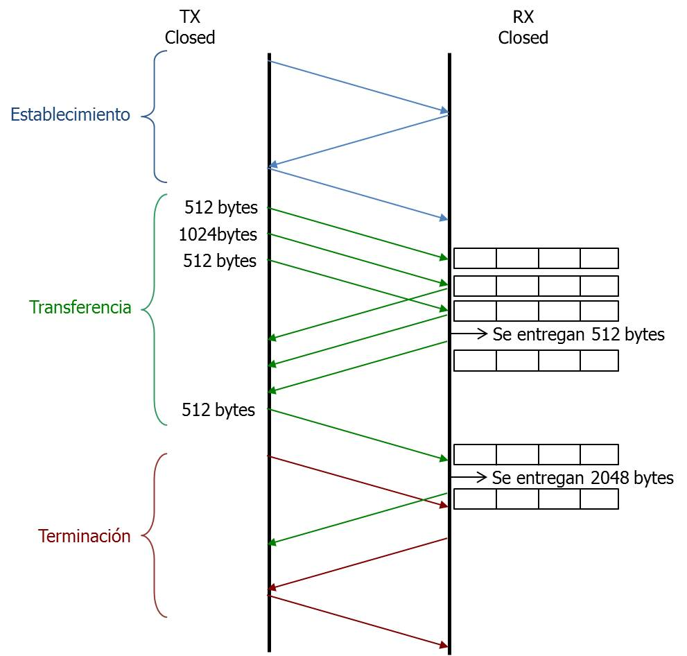

Capítulo 6 Capa de Transporte
6.1 Introducción
La capa de transporte es la cuarta capa del modelo OSI y una de las más imortantes en el modelo TCP/IP. Su función principal es proporcionar comunicación confiable de extremo a extremo entre aplicaciones que se ejecutan en dispositivos distintos a través de una red. Esta capa actúa como intermediaria entre las aplicaciones y la red subyacente, asegurando que los datos lleguen completos, sin errores y en orden, adaptándose tanto a las capacidades del receptor como al estado actual de la red.
En el modelo TCP/IP, los protocolos más importantes de esta capa son TCP y UDP, que ofrecen servicios con características muy diferentes.
TCP (Transmission Control Protocol). Es un protocolo orientado a conexión que garantiza la entrega confiable y ordenada de datos a través de la red.
UDP (User Datagram Protocol). Es un protocolo no orientado a conexión, rápido pero sin garantías de entrega.
Una función clave de esta capa es el multiplexaje y demultiplexaje de datos, que permite que múltiples aplicaciones puedan acceder simultáneamente a la red, como se muestra en la figura 6.1. Cada aplicación es un proceso en ejecución que accede a los servicios de la capa de transporte, a través de un TSAP (Transport Service Access Point), que –en el modelo TCP/IP– se asocia a un número de puerto.
Figura 6.1: Multiplexaje y demultiplexaje de servicios de red en la capa 4.
Existen puertos preasignados por la IANA para aplicaciones muy comunes, muchas de ellas definidas en sus propios RFC. Se les conoce como puertos bien conocidos (WKP, well-known ports); algunos de los más populares se muestran en la tabla siguiente.
| Puerto | Protocolo | Aplicación / Servicio |
|---|---|---|
| 20, 21 | TCP | FTP (File Transfer Protocol) - datos y control |
| 22 | TCP | SSH (Secure Shell) |
| 23 | TCP | Telnet (acceso remoto inseguro) |
| 25 | TCP | SMTP (Simple Mail Transfer Protocol) - envío de correo |
| 53 | TCP/UDP | DNS (Domain Name System) |
| 67, 68 | UDP | DHCP (Dynamic Host Configuration Protocol) |
| 69 | UDP | TFTP (Trivial File Transfer Protocol) |
| 80 | TCP | HTTP (HyperText Transfer Protocol) |
| 161 | UDP | SNMP (Simple Network Management Protocol) |
| 443 | TCP | HTTPS (HTTP sobre SSL/TLS) |
| 587 | TCP | SMTP sobre TLS (envío de correo seguro) |
| 3306 | TCP | MySQL (base de datos) |
| 3389 | TCP | RDP (Remote Desktop Protocol) |
6.1.1 Comunicación mediante Sockets
Un proceso se asocia a un puerto a través del cual envía y recibe datagramas. Esta asociación se da mediante una estructura de datos conocida como socket la cual también vincula al proceso con la dirección IP del equipo en el que se está ejecutando.
La figura 6.2 presenta las funciones típicas para establecer una comunicación entre aplicaciones a través de sockets. Los nombres de las funciones corresponden a la interfaz de programación de sistemas operativos UNIX/Linux. Otros sistemas operativos tienen funciones similares. En el diagrama, las funciones en azul se utilizan para el servicio orientado a conexión que ofrece TCP.
El servidor crea un socket con la función
socket().El socket se asocia a un puerto específico con la función
bind(). Si se trata de una aplicación común, quizás se trate de un WKP, como los señalados en la tabla anterior.Si se trata de un servicio orientado a conexión, configura el tamaño de la cola de espera y espera solicitudes de conexión mediante la función
listen().Cuando el cliente desea comunicarse con el servidor, también crea un socket.
Es posible que este socket se asocie a un puerto específico invocando la función
bind(), aunque es más común que la asociación se haga a cualquier puerto disponible al invocar alguna de las funciones siguientes.Si se trata de un servicio orientado a conexión, el cliente solicita la conexión mediante la función
connect(). Si está disponible, el servidor acepta la solicitud con la funciónaccept()(S4).Se da el intercambio de mensajes entre los dos procesos invocando las funciones
read(), write()osend(),receive().Si se trata de un servicio orientado a conexión, la conexión se termina invocando la función
close()
Figura 6.2: Comunicación mediante sockets. Las cajas azules se utilizan para un servicio orientado a conexión.
6.2 UDP (User Datagram Protocol)
UDP es un protocolo sumamente sencillo, no orientado a conexión que proporciona un servicio rápido pero sin garantías de entrega ni orden de arribo de los datagramas. Por ello, es responsabilidad de las aplicaciones el verificar que la información recibida es correcta. De hecho, UDP se limita a ofrecer el servicio de multiplexaje y demultiplexaje entre los procesos en la capa de aplicación, y los servicios de la capa de red, como se ilustra en la figura 6.1.
UDP es útil en aplicaciones donde la velocidad en la entrega de la información es más importante que la fiabilidad, como ocurren en los servicios multimedia en tiempo real (Videoconferencia, Voz sobre IP). En este tipo de aplicaciones, es mejor que se pierda un paquete (el contexto de la comunicación suele permitir que nuestro cerebro compense esas pérdidas) a que el paquete llegue tarde porque fue retransmitido.
UDP también se utiliza en aplicaciones que requieren de un protocolo muy ligero en las que con frecuencia la información se transmite periódicamente, como son las peticiones al sistema de nombres de dominio (DNS) y las solicitudes de información en los protocolos de gestión de redes (SNMP).
6.2.1 Formato del datagrama UDP
Dado que no ofrece ninguna otra funcionalidad, el encabezado de UDP es sumamente sencillo y consta únicamente de los cuatro campos como se muestran en la figura 6.3.
Figura 6.3: Formato del datagrama UDP.
Los campos del encabezado son:
- Puerto fuente.
-
Indica el puerto desde que se envía el datagrama en la computadora emisora. Su longitud es de 16 bits. Observe que, con 16 bits, el número de puertos disponibles en UDP es de \(\mathbf{2^{16} = 65,536}\).
- Puerto destino.
-
Indica el puerto hacia el que se envía el datagrama en la computadora destinataria. Su longitud es, por supuesto, también de 16 bits.
- Longitud total del datagrama.
-
Este campo indica la longitud total: encabezado y datos. Con 16 bits, la longitud máxima de un datagrama UDP es de 64,536 octetos, incluyendo el encabezado.
- Checksum.
-
Este campo, de 16 bits, se utiliza para verificar la integridad del encabezado UDP y la dirección de los equipos involucrados. Se calcula como la suma en complemento a 1 de los tres campos anteriores, las direcciones IP fuente y destino, y el campo de protocolo en el encabezado de IP (UDP, valor 17). El cálculo del checksum es opcional y cuando no se calcula, este campo debe tener un valor de cero.
6.2.2 Análisis de un datagrama UDP
La figura 6.4 muestra la captura de una trama Ethernet que transporta un datagrama UDP. Los octetos en fondo azul representan los campos del encabezado de Ethernet (no se incluye el CRC) y los que tienen fondo verde, son los campos del encabezado del paquete IP. Se resalta el octeto 0x11, que indica el tipo de protocolo transportado en el paquete: UDP.
Figura 6.4: Análisis de un datagrama UDP transportado en una trama Ethernet.
El puerto destino (0x0035) tiene el valor 53 decimal, que corresponde al servicio DNS, como se indica en la tabla 1.
El puerto fuente (0x052B) es un puerto asignado dinámicamente por el sistema operativo del emisor.
La longitud del datagrama es de 39 octetos (0x0027), contados desde el primer octeto del puerto fuente (05) hasta el último octeto del campo de datos (01).
En este datagrama sí se hizo la verificación de integridad; el checksum resultante es 0xD5F3.
6.3 TCP (Transmission Control Protocol)
TCP es un protocolo orientado a conexión que proporciona un servicio confiable y ordenado de entrega de datos entre aplicaciones que se ejecutan en distintas computadoras. A diferencia de UDP, TCP garantiza que los datos lleguen sin errores, en el mismo orden en que fueron enviados, y sin duplicaciones a través de una red no confiable, como la Internet. Para lograr esto, implementa mecanismos de control de flujo, control de errores y control de congestión.
En TCP, a las unidades de información intercambiadas se les llama segmentos. A diferencia de UDP que considera sus mensajes (los datagramas) como unidades independientes y autónomas, TCP considera la información generada por la aplicación como un flujo continuo de bytes. Segmenta este flujo en fragmentos para su transmisión. Esta segmentación le permite gestionar mejor el control de flujo y de errores, así como adaptarse al tamaño óptimo que deben tener los mensajes dadas las condiciones de la red. Cada segmento se encapsula en un datagrama IP que no excede la MTU (Maximum Transmission Unit) de la red, evitando la fragmentación ineficiente en la capa IP.
Las principales características que distinguen a TCP son:
Orientado a conexión: Antes de transmitir datos, se debe establecer una conexión entre el cliente y el servidor mediante un proceso conocido como three-way handshake.
Entrega confiable: TCP asegura que los segmentos se entreguen correctamente. Si un segmento se pierde o llega con errores, se retransmite.
Control de flujo: TCP utiliza una ventana de recepción para evitar que el emisor sature al receptor.
Control de congestión: Ajusta dinámicamente la tasa de transmisión para evitar la sobrecarga de la red.
Entrega ordenada: Los segmentos se reensamblan en el receptor en el mismo orden en que fueron enviados.
Multiplexaje y demultiplexaje: Igual que en UDP, se identifican procesos mediante puertos.
6.3.1 Formato del segmento TCP
El segmento TCP incluye un encabezado más complejo que el de UDP, como se muestra en la figura 6.5.
Figura 6.5: Formato del segmento TCP.
Algunos campos clave son:
- Puerto fuente y destino.
-
Al igual que en UDP, se trata de campos de 16 bits que identifican a los procesos en los extremos de la conexión. También se tienen 65,536 puertos disponibles en TCP.
- Número de secuencia.
-
Indica indirectamente la posición del octeto dentro del flujo de información, que se está enviando. Es fundamental para el reordenamiento de segmentos y la detección de pérdidas. Es un campo de 32 bits.
- Número de reconocimiento.
-
Indica el siguiente número de secuencia que el receptor espera recibir, confirmando así la correcta recepción de datos previos. Cabe enfatizar que el número de secuencia y el de acuse de recibo se refieren a flujos de segmentos en direcciones opuestas.
- Longitud del encabezado
-
. Este campo, de 4 bits, indica el número de palabras de cuatro octetos que tiene el encabezado. Su valor por omisión es 5, señalando que el encabezado de TCP ocupa 20 octetos. Este campo es necesario porque en TCP se pueden agregar opciones, lo que incrementa en número de campos en el encabezado.
- Banderas de control.
-
Se trata de seis bits que tienen una función específica dentro del protocolo:
- URG (Urgente).
-
Se utiliza cuando algo muy importante en la secuencia de bytes debe ser entregado, por ejemplo, cuando el usuario emite un comando de interrupción. Si esta bandera está encendida, el octato en donde inicia la información “urgente” se indica en el campo Apuntador de datos urgente.
- ACK (Acuse de recibo).
-
Indica que el campo del acuse de recibo es válido. Esta bandera está encendida en todos los segmentos excepto en el primero, cuando se inicia el establecimiento de la conexión (ver más adelante).
- PSH (Push).
-
Esta bandera indica que los datos en ese segmento deben ser emitidos inmediatamente, sin esperar a que se llene el buffer de recepción o lleguen más datos.
- RST (Reset).
-
Esta bandera se utiliza para abortar inmediatamente la conexión, generalmente debido a un error, una condición inesperada o cuando se recibe un paquete que no corresponde a una conexión válida.
- SYN (Sincronización).
-
Esta bandera se utiliza sólo al inicio de la conexión para indicar que el campo Número de secuencia tiene un valor con el que se empezarán a enumerar los octetos en el flujo de datos.
- FIN (Final).
-
Se enciende para notificar que se está terminando la conexión y los recursos utilizados deben ser liberados.
- Tamaño de ventana.
-
Este campo, de 16 bits, indica el espacio disponible en el buffer de recepción, es decir, cuántos octetos puede recibir el receptor sin desbordarse. Es un campo fundamental para el control de flujo. Con 16 bits, el tamaño máximo del buffer de recepción es de 64 kBytes.
- Checksum.
-
Verifica la integridad del segmento TCP. Al igual que en UDP, se calcula mediante la suma en complemento a 1 de los octetos que conforman el segmento, junto con algunos campos del encabezado IP, como las direcciones y tipo de protocolo. En TCP, su cálculo es obligatorio.
- Opciones.
-
Como se ha mencionado, TCP puede incluir opciones, algunas de las cuales se mostrarán a lo largo del capítulo. Los campos de las opciones deben ser palabras de cuatro octetos; en caso de no ser así, se agregan bytes de relleno.
6.3.2 Análisis de un segmento TCP
La figura 6.6 muestra la captura de un segmento TCP transportado en una trama Ethernet. Los octetos en fondo azul representan los campos del encabezado de Ethernet (no se incluye el CRC) y los que tienen fondo verde, son los campos del encabezado del paquete IP. Se resalta el octeto 0x06, que indica el tipo de protocolo transportado en el paquete: TCP.
Figura 6.6: Análisis de un segmento TCP transportado en una trama Ethernet.
El puerto fuente (0x0017) tiene el valor decimal 23, que corresponde al servicio TELNET, como se indica en la tabla 1.
El puerto destino, con valor 1030 (0x0406), es un puerto asignado dinámicamente por el sistema operativo del receptor.
El número de secuencia (0x0125F268) indica la posición relativa en el flujo de información a enviar, del primer octeto de los datos transportados por el segmento(0x6C).
El número de reconocimiento (0x00588D67) indica la posición relativa en el flujo de información a recibir, del siguiente octeto que se espera. Con ello se indica que todos los octetos anteriores han sido recibido correctamente. Los número de secuencia y de reconocimiento tienen distintos valores porque se refieren a flujos distintos.
La longitud del encabezado indica que se tienen 5 palabras de cuatro octetos, es decir, se tiene un encabezado de 20 octetos (el segmento no tiene opciones).
Están encendidas las banderas de PSH y ACK.
El tamaño del buffer de recepción es de 33,580 octetos (0x832C).
La longitud del datagrama es de 39 octetos (0x0027), contados desde el primer octeto del puerto fuente (05) hasta el último octeto del campo de datos (01).
En este datagrama sí se hizo la verificación de integridad; el checksum resultante es 0xD5F3.
El checksum tiene un valor de 0x=EAA.
Como la bandera URG no está encendida, el apuntador a datos urgentes tiene un valor de cero.
6.3.3 Establecimiento y liberación de una conexión
Antes de que dos aplicaciones intercambien datos mediante TCP, deben establecer una conexión lógica a través de un proceso de tres pasos conocido como three-way handshake, que se muestra en la figura 6.7.
Figura 6.7: Establecimiento de una conexión TCP mediante el three-way handshake.
El cliente envía un segmento con la bandera
SYNencendida, indicando que estará enumerando los octetos en el flujo de datos a partir del valor indicado en el campo Número de secuencia. En el ejemplo de la figura, el valor 198. Observe que la bandera ACK no está encendida.El servidor responde con un segmento que tiene encendidas las banderas
SYNyACK. Como está encendida la banderaSYNle está notificando al receptor su propio número de secuencia inicial para el flujo de datos del servidor al cliente. En el ejemplo de la figura, es el valor 299. El campo de acuse de recibo es válido (banderaACKencendida) y, en el ejemplo de la figura, su valor es 199, el número de secuencia del siguiente octeto que espera recibir. Así se confirma la recepción del primer segmento.El cliente envía un segmento final con la bandera
ACKencendida y el campo de acuse de recibo indicando el número de secuencia del próximo octeto esperado. En el ejemplo de la figura, 300.
Este intercambio de mensajes ocurre en las fases C3 y S4 de la figura (fig:socketapi). Una vez establecida la conexión se puede intercambiar información (fases C4 y S5).
De forma similar, la terminación de una conexión TCP requiere un proceso
de 4 pasos, conocido como four-way handshake para liberar los recursos
ocupados por la conexión. Este proceso se muestra en la
figura 6.8. Este proceso ocurre cuando alguno de los
extremos en la comunicación invoca la función close( ) (fases C5 o S6
de la figura 6.2.
Figura 6.8: Liberación de una conexión TCP mediante el four-way handshake.
Una de las partes, por ejemplo, el nodo A, envía un segmento con la bandera FIN encendida para indicar que ha terminado de enviar datos. En este momento, Nodo A pasa al estado
FIN_WAIT_1.El extremo opuesto (Nodo B) recibe el mensaje y responde con un
ACKpara confirmarlo. Nodo A pasa a FIN_WAIT_2 y Nodo B entra en la faseCLOSE_WAIT, indicando que ha recibido la petición de cierre pero puede seguir enviando datos.Cuando Nodo B termina de enviar sus datos, envía su propio segmento con la bandera
FINencendida. Nodo B pasa al estadoLAST_ACK.Nodo A recibe este segmento y responde con un
ACKfinal. Nodo A pasa al estadoTIME_WAITpara esperar a que el últimoACKsea recibido correctamente y evitar problemas con paquetes retrasados. Después de un tiempo (2 veces el máximo tiempo de vida del paquete), Nodo A pasa aCLOSEDy la conexión termina. Nodo B, tras recibir elACK, también pasa aCLOSED.
Si no se envía o recibe un ACK tras el envío de FIN, el lado que lo
envió se queda en FIN_WAIT_1 esperando. Tras un timeout se puede
retransmitir el FIN o cerrar la conexión forzosamente.
Si el receptor no envía su FIN, la conexión queda en estado
half-closed. Esto es válido en TCP pero un extremo de la conexión
puede quedar esperando indefinidamente (o hasta timeout).
Si alguno ignora el proceso y cierra abruptamente, sin enviar FIN, se
puede usar la bandera RST para abortar la conexión. Esto ocasiona un
cierre inmediato, pero no es ordenado y puede provocar pérdida de datos.
6.3.4 Control de errores
Como se mencionó en la sección anterior, para cada segmento se calcula un código de verificación (checksum) a partir del encabezado, algunos campos de la capa IP y los datos que transporta; el valor obtenido se inserta en el campo de detección de errores y se envía el segmento. Al arribo del segmento, el receptor realiza el mismo cálculo; si el resultado no coincide con el valor recibido, ha ocurrido un error y el segmento se desecha.
TCP asigna a cada octeto transmitido un número de secuencia único durante el tiempo de vida de la conexión. Los valores iniciales usados por cada extremo, son los números de secuencia iniciales indicados durante el establecimiento de la conexión. En los segmentos que transportan datos del usuario, el campo de número de secuencia corresponde al primer octeto de datos del segmento. El receptor utiliza este valor para detectar segmentos duplicados o faltantes.
A la llegada de un segmento de datos, el receptor verifica su integridad
y si éste llegó correctamente, responde enviando un acuse de recibo
colocando en el campo correspondiente el número de secuencia del
siguiente octeto que espera recibir; el acuse de recibo es acumulativo.
Por ejemplo, si la transferencia de A a B utiliza un número de secuencia
inicial \(i\), un mensaje ACK(k) de B a A, indica el arribo correcto de
los octetos \(i+1\) a \(k-1\) (el mensaje SYN consume el primer número de
secuencia \(i\)).
Segmentos dañados o descartados en la red, no serán reconocidos; si después de un cierto tiempo el transmisor no ha recibido el acuse de recibo, asumirá que el segmento se perdió y lo enviará nuevamente.
TCP utiliza un mecanismo de ventanas deslizantes y puede haber varios segmentos en tránsito. En la gran mayoría de las versiones de TCP, si uno de esos segmentos se pierde o está dañado, el acuse de recibo se envía con el valor de los datos recibidos correctamente hasta ese segmento. El emisor reenvía datos a partir del segmento dañado. Es decir, en la mayoría de los casos, TCP utiliza un mecanismo Go-back to N. Algunas versiones modernas pueden emplear acuses de recibo selectivos (SACK, selective acknowledgment).
Dado que la comunicación es bidireccional, los acuses de recibo pueden combinarse con segmentos de datos que viajan en la dirección contraria. A ésto se le conoce como piggybacking. Es una opción que mejora el rendimiento de la red, por lo que a veces el acuse de recibo se retiene un cierto tiempo (200 ms típicamente) para intentar combinarlo con datos salientes.
6.3.5 Control de flujo
TCP utiliza el mecanismo de “ventana deslizante” para controlar la cadencia a la que se transmite información para asegurar que el emisor no envíe más datos de los que el receptor puede procesar y almacenar en su búfer de recepción. Se trata de un espacio en memoria creado al establecer la conexión en el que se almacenan los datos entrantes mientras la aplicación los procesa. Para evitar que este búfer se desborde, el receptor informa al emisor, mediante el campo “tamaño de ventana receptor” en el encabezado TCP (figura 6.5, cuántos octetos adicionales puede aceptar en ese momento.
El tamaño de esta ventana es dinámico y refleja el espacio disponible en el búfer del receptor. El emisor puede enviar tantos datos como indique la ventana, sin esperar un acuse de recibo para cada octeto enviado, lo que permite un flujo continuo y eficiente de información.
Si el buffer se llena, el receptor anunciará una ventana de tamaño cero, indicando al emisor que debe detener temporalmente el envío de datos. El emisor permanecerá en espera hasta que el receptor libere espacio y anuncie una ventana mayor que cero, momento en el cual el emisor podrá reanudar la transmisión.
Del lado del transmisor, además de atender el tamaño de la ventana para determinar cuántos octetos puede enviar en un segmento, debe retener esos datos enviados en su propio buffer hasta recibir la confirmación de que los datos han llegado correctamente, ya que es posible que pueda retransmitirlos.
Es en el buffer de recepción donde se manifiesta el concepto de ventana deslizante, como se muestra en la figura 6.9. La secuencia de octetos representa el flujo de datos generados por la aplicación. El rectángulo azul representa la ventana deslizante en el tramsisor.
Figura 6.9: El mecanismo de ventana deslizante en TCP.
La región A corresponde a octetos que ya han sido enviados y reconocidos, por lo que TCP los descarta.
La región B corresponde a octetos enviados pero aún no reconocidos. Se retienen en caso de que deban ser retransmitidos. Se contrae a la derecha conforme llegan los acuses de recibo.
Los octetos en la región C pueden ser transmitidos. Por motivos de eficiencia, TCP trata de esperar a que se tenga un mínimo número de octetos antes de enviar el segmento. Se contrae a la derecha conforme se envían datos.
La región D corresponde a datos que no pueden ser enviados hasta que el receptor anuncie que tiene espacio disponible. Si el receptor anunca un tamaño de ventana de \(n\) octetos y la región C tiene \(m\) octetos, la ventana del transmisor se “desliza” a la derecha \(n-m\) octetos.
El ejemplo de la figura 6.10 muestra el control de flujo en acción. En la figura, se supone que al establecer la conexión, se definión un buffer de recepción de 4kOctetos en el nodo B.
Figura 6.10: Ejemplo de control de flujo en TCP.
El nodo A envía 2 kOctetos. El número de secuencia del primer octeto es 200.
Esta información queda en el buffer de recepción en espera de ser entregada a la aplicación. El nodo B notifica al transmisor la correcta recepción de los datos.
ACKindica que espera que el siguiente octeto sea el número 2,248. Los octetos recibidos se enumeraron de 200 a 2,247. También notifica que la ventana de recepción disponible es de 2,048 octetos.El nodo A envía otros 2 kOctetos enumerados a partir de 2,248.
El nodo B notifica la correcta recepción de estos datos (espera que el siguiente octeto sea 4,296) y también notifica que ya no tiene espacio en el buffer, por lo que el emisor debe suspender la transmisión.
Eventualmente, la aplicación recibe los dos primeros kOctetos. En ese momento, el Nodo B envía un segmento con el mismo valor de acuse de recibo (no ha recibido nada nuevo) pero anunciando una ventana de 2 kOctetos, el espacio disponible en el buffer de recepción.
El nodo A envía otros 2 kOctetos enumerados a partir de 4,296.
6.3.6 Control de congestión
TCP debe adaptarse constantemente a la capacidad disponible en la red, reduciendo la tasa de transmisión cuando detecta congestión y aumentándola cuando considera que hay recursos disponibles.
La idea básica es llegar a un nivel auto-sincronizado en el que la tasa a la que se inyectan paquetes en la red es igual a la tasa en que se reciben los acuses de recibo. Idealmente, si la ventana del receptor lo permite, hay tantos paquetes en tránsito en la red como sea posible.
Existen muchas variantes de control de congestión en TCP; las más populares se basan en los conceptos mostrados en la figura 6.11.
Figura 6.11: Control de congestión en TCP..
Se define una Ventana de Congestión, cwnd, que evoluciona en función de las condiciones de congestión en la red y limita la cantidad de datos que el transmisor puede enviar. Combinando este mecanismo con el de control de flujo, si se tienen datos a transmitir, la cantidad a enviar será el valor menor entre cwnd (control de congestión) y la ventana de recepción (control de flujo).
Por otro lado, se considera que las redes modernas son bastante confiables y que si un segmento no llega a su destino, es porque hubo congestión en la red y el segmento fue descartado por algún enrutador. De esta manera, la ausencia del acuse de recibo de un segmento es vista como un indicador de congestión y el emisor reacciona disminuyendo la tasa a la que inyecta segmentos 20.
6.3.6.1 Arranque lento (Slow start) y prevención de congestión (Congestion avoidance)
Al inicio de una conexión, se desconoce completamente la capacidad de la red. Por ello, el transmisor toma una actitud cautelosa enviando pocos datos (slow start). Para ello cwnd se inicia con el valor de uno o dos segmentos.
Como se desea aprovechar rápidamente la capacidad disponible, en esta fase se permite que cwnd crezca exponencialmente: con cada acuse de recibo, cwnd se incrementa en uno, con lo que cwnd se duplica cada RTT (retardo de ida y vuelta). Este proceso continúa hasta que cwnd rebase un “umbral” ssthresh (slow start threshold) o hasta que se detecte la pérdida de un segmento.
Si cwnd rebasa ssthresh, se entra en la fase de prevención de congestión; en ella, la tasa de transmisión aumenta mucho más lentamente: cwnd se expande linealmente en un segmento a cada RTT, es decir, cuando los reconocimientos de toda una ventana de segmentos han sido recibidos.
En el ejemplo de la tabla 2, se supone que el transmisor siempre tiene datos a enviar; el RTT es constante de T segundos y ssthresh tiene un valor de 15. La ventana de recepción no afecta el ejemplo, por lo que no se muestra.
| Tiempo | Acuses de recibo | cwnd | Segmentos enviados | |
|---|---|---|---|---|
| 0 | 1 | 1 | ||
| Arranque | T | 1 | 2 | 2, 3 |
| lento | 2T | 2, 3 | 4 | 4, 5, 6, 7 |
| 3T | 4, 5, 6, 7 | 8 | 8, 9, ..., 15 | |
| Prevención | 4T | 8, 9, ..., 15 | 9 | 16, 17, ..., 24 |
| congestión | 5T | 16, 17, ..., 24 | 10 | 25, 26, ..., 34 |
En la figura 6.11 la cruz color rojo indica que se ha perdido un segmento (o más); esto ocurre con un valor de cwnd de 16 segmentos. Como el segmento no llega a su destino, no se envía un acuse de recepción. El transmisor detecta la ausencia de acuse por la expiración de un temporizador. En respuesta a ello:
La ventana de congestión se reduce a 1 o 2 segmentos. Se reduce drásticamente la tasa de transmisión para contribuir a disminuir la congestión en la red. Este comportamiento se muestra en la figura con la línea cortada de color naranja.
El umbral ssthresh toma el valor de la mitad de cwnd al momento de la pérdida del segmento. Se ajusta la fase de crecimiento exponencial a la mitad de la capacidad estimada al momento de la pérdida del segmento.
Se retransmiten los segmentos a partir de aquél que detonó el temporizador. En efecto, TCP implemnta un mecanismo de Go-back-N.
6.3.6.2 Retransmisión rápida (fast retransmission) y recuperación rápida (fast recovery)
El mecanismo descrito en el párrafo anterior corresponde a la version de TCP conocida como TCP Tahoe, que es la primera en la que se implementaron los mecanismos de control de congestión. Este mecanismo puede ser bastante ineficiente, pues además de que se debe esperar a que se agote un temporizador, se continua con la transmisión a una tasa sumamente baja de uno solo segmento.
Si las condiciones de congestión en la red no son tan severas, lo cual ocurre con mucha frecuencia, en una ventana de transmisión se estarían perdiendo algunos segmentos, pero no todos. Imaginemos que se ha enviado una ventana con los segmentos 14 a 20 y se pierde el segmento 16. El receptor, a la llegada del segmento 15, envía un acuse de recibo con el valor 16, el siguiente segmento que espera recibir. Se ha perdido el segmento 16 pero llega el 17. El receptor lo almacena en su buffer y envía nuevamente un ACK 16. Este acuse será visto en el transmisor como un reconocimiento duplicado, aunque no podrá saber si el duplicado se debe a la pérdida de un segmento o a otros factores.
La recepción de varios acuses duplicados (3 en la mayoría de las implementaciones), es un fuerte indicio de que un segmento ha sido descartado (en nuestro ejemplo, el segmento 16), por lo que éste se re-expide inmediatamente, sin tener que esperar el vencimiento del temporizador. A esto es al que sele llama retransmisión rápida.
Por otro lado, la llegada de acuses duplicados indica que la congestión no es tan drástica pues algunos de los segmentos posteriores al que presumiblemente ha sido descartado, lograron llegar al destino. Por ello, la reducción en la tasa de transmisión no debería ser tan drástica como el transmitir solo un segmento.
La recuperación rápida consiste en reducir y cwnd sshtresh a la mitad del valor que tenía cwnd, con lo que la tasa de transmisión se reduce efectivamente a la mitad y un nuevo ciclo de prevención de congestión se inicia. Este comportamiento muestra en la figura 6.11 con la línea continua de color azul y corresponde a las implementaciones llamadas Tcp Reno y TCP New Reno que son la base de la mayoría de las implementaciones actuales.
6.3.7 Otros mecanismos de control de congestión en TCP
En los últimos años han surgido nuevos algoritmos de control de congestión en TCP que buscan superar las limitaciones de los mecanismos tradicionales mencionados anteriormente. Estos mecanismos modernos optimizan el rendimiento en redes de alta velocidad o latencia variable y consideran escenarios específicos como centros de datos. A continuación, se describen los algoritmos más relevantes:
- TCP Cubic.
-
Es el algoritmo de control de congestión por defecto en sistemas Linux desde 2006. Utiliza una función cúbica para modelar el crecimiento de la ventana de congestión, lo que permite una recuperación más rápida tras una pérdida y una mejor utilización del ancho de banda disponible. Su comportamiento es más agresivo que TCP Reno, pero mantiene compatibilidad con conexiones tradicionales, lo que lo hace adecuado para redes modernas de alta capacidad.
- BBR.
-
Desarrollado por Google, BBR (Bottleneck Bandwidth and Round-trip propagation time) representa un cambio de paradigma al no basarse en la pérdida de paquetes como señal de congestión. En su lugar, construye un modelo de la red estimando el ancho de banda máximo y el retardo de ida y vuelta (RTT). Ajusta su tasa de envío para operar cerca de la capacidad de la red sin provocar congestión, lo que permite mantener altas tasas de transferencia incluso en enlaces con alta latencia o pérdidas espurias.
- DCTCP.
-
DCTCP (Data Center TCP) fue diseñado específicamente para centros de datos, donde es crucial mantener baja latencia y alto rendimiento. DCTCP extiende el uso de ECN (Explicit Congestion Notification) para ajustar de forma precisa la ventana de congestión, utilizando la proporción de paquetes marcados con ECN como indicador del nivel de congestión. Gracias a este enfoque, logra respuestas más suaves que TCP tradicional ante variaciones en la red.
- LEDBAT.
-
Pensado para aplicaciones que generan tráfico en segundo plano, LEDBAT(Low Extra Delay Background Transport) ajusta dinámicamente su tasa de envío para no interferir con flujos interactivos o prioritarios. Basado en la medición del retardo (one-way delay), LEDBAT reduce su envío si detecta que está generando congestión, permitiendo así un uso eficiente del ancho de banda sin afectar la experiencia de otros usuarios.
6.4 Problemas
Problema 6.1 Un puerto en TCP/IP, a qué es equivalente en OSI/ISO:
- TSAP
- L4-PDU
- L3-SDU
- PORT
Problema 6.2 ¿En qué casos es más conveniente utilizar UDP en vez de TCP como protocolo de transporte?
Problema 6.3 Si en el último segmento enviado SEQ era 14000 y en el acuse de recibo que acaba de llegar el valor de RxWIN es 8000, el ACK 12000 y , ¿Cuántos octetos más se pueden enviar?
- 2000
- 4000
- 6000
- 8000
Problema 6.4 Para TCP Tahoe, relacione al parámetro indicado el valor que toma inmediatamente después de detectar la pérdida de un segmento.
| Nº | Parámetro | Referencia | Valor | |
|---|---|---|---|---|
| 1 | cWnd | (a) | No cambia | |
| 2 | ssThresh | (b) | 1 | |
| 3 | Valor TimeOut | (c) | SlowStart | |
| 4 | Fase | (d) | No cambia |
Problema 6.5 ¿En qué capa del modelo OSI puede ocurrir el fenómeno llamado "síndrome de la ventana torpe". Justifique muy brevemente su respuestas.
Problema 6.6 (Los valores en esta pregunta se refieren a números de segmentos). Con un valor ssthresh = 20, se envían 15 segmentos y se pierde el 30. Si se está utilizando TCP NewReno, ¿Qué segmentos se reenviarán?
Sólo el segmento 30
Del segmento 30 al 39
Del segmento 30 al 49
Del segmento 20 al 39
Problema 6.7 En una comunicación TCP, El temporizador de retransmisiones (RTO) está ajustado a un valor de 2 mSeg. ¿Qué ocurre si el acuse de recibo del segmento \(x\) llegá después de 4 mSeg?
Se retransmite \(x\) y \(RTO = 2\,\text{ mSeg}\)
Se retransmite \(x\) y \(RTO 4 2\,\text{ mSeg}\)
Se retransmite \(x\) y \(2\,\text{mSeg} < RTO < 4\,\text{mSeg}\)
No se retransmite \(x\) y \(RTO = 2\,\text{ mSeg}\)
No se retransmite \(x\) y \(RTO 4 2\,\text{ mSeg}\)
No se retransmite \(x\) y \(2\,\text{mSeg} < RTO < 4\,\text{mSeg}\)
Problema 6.8 Para el cronograma de la siguiente figura, considere que el buffer en el receptor es de 2,048 bytes.
Indique el estado de los nodos durante el establecimiento y terminación de la conexión (CLOSED, ESTABLISHED, ...)
Para cada PDU de TCP en la siguiente figura, indique el número de secuencia, de reconocimiento, el tamaño de ventana y el estado de las banderas SYN y ACK según corresponda.

```
Problema 6.9 En un enlace dedicado de fibra óptica a 16 Mb/s, entre dos ciudades separadas 5,000 kilómetros, se establece una conexión para transferir archivos grandes con TCP.
- ¿Cuál es el RTT del enlace?
- ¿Cuál debe ser el tamaño de la ventana para que el enlace se utilice por completo?
- ¿Cuál es la tasa de transferencia máxima si la ventana es la mitad del valor obtenido en (b)?
- ¿Cuál es la tasa de transferencia máxima si la ventana es el doble del valor obtenido en (b)?
Problema 6.10 A través de un enlace de 16 Mbps con un retardo de ida y vuelta de 50 mSeg, se debe enviar un archivo de 4 MBytes. La transferencia se hace con FTP. Considere únicamente los aspectos de TCP relacionados con el control de flujo.
Si no se han implementado las extensiones de TCP, ¿Cuánto tiempo se tarda en transferir el archivo?
Si se han implementado las extensiones, ¿Cuánto tiempo se tarda en transferir el archivo? ¿De qué tamaño debe ser el buffer de recepción?
Los buffers de transmisión y recepción, las ventanas de recepción y congestión, y los números de secuencia y de reconocimiento, se especifican en octetos. Sin embargo, para simplificar la exposición, en esta sección nos referiremos al envío, recepción y acuse de recibo de segmentos.↩︎